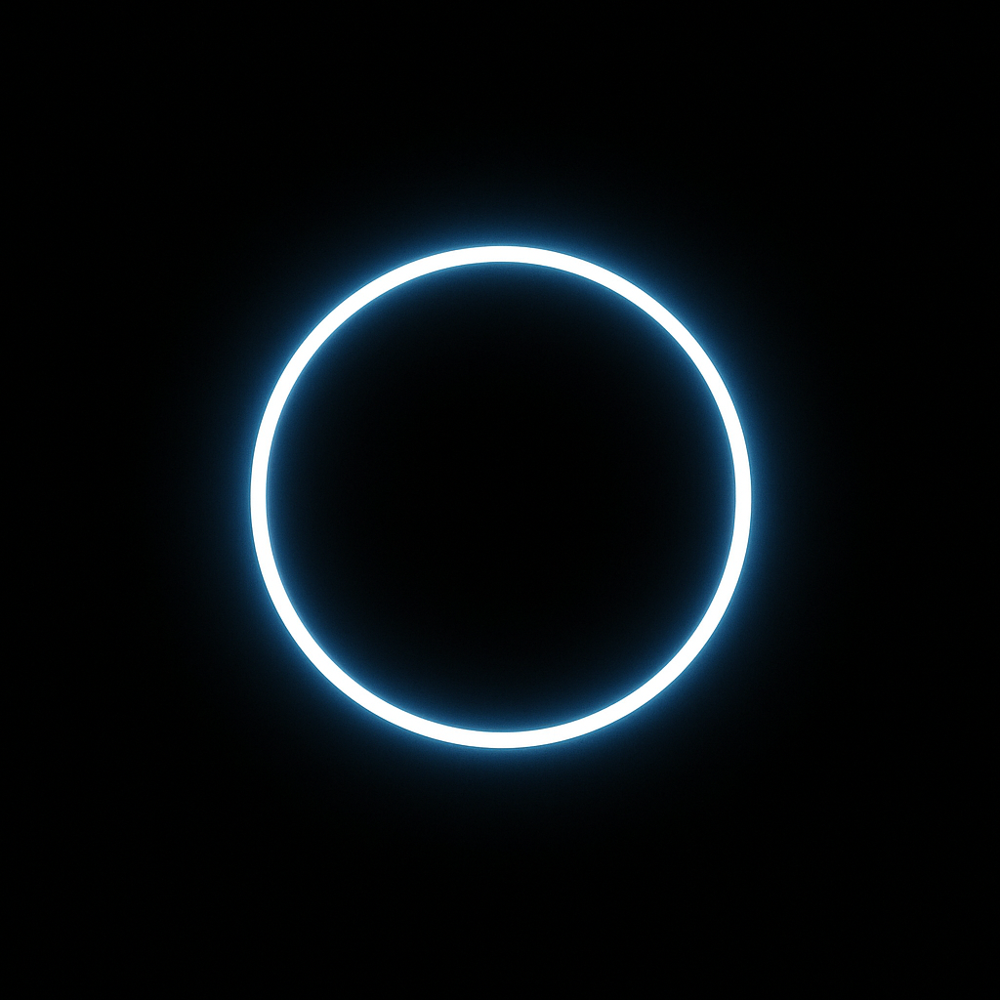

NuLumA
No content. Just space.
Why we exist
Your attention is under siege.
Your body needs pause.
Your mind deserves stillness.
NuLumA is a platform of structured absence.
No lessons. No guidance. No feed.
Just designed silence.
What you get
- NuLumA App — silent sessions, breath sync
- StillBot — for Slack / Teams
- VoidAPI — HR & wellbeing integrations
- [Beta] SilentRoom — physical pause capsule
Mission
To create digital sanctuaries of structured silence,
empowering humans to pause, breathe,
and realign in a world of noise.
Status
NuLumA is in soft launch.
Pilots and partnerships are open.
Be among the first to hear… nothing.